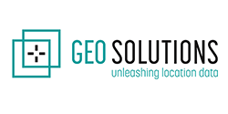

Mijn sterkte ligt ongetwijfeld in het feit dat ik de hele projectflow van A tot Z kan opnemen. Door mijn opleiding kreeg ik de nodige technische bagage en programmeerskills voor het ontwikkelen van applicaties. Gecombineerd met mijn professionele werkervaring als projectleider kan ik verder gaan dan de technische ontwikkeling en kan ik opdrachtgevers volledig ontzorgen.
Ik ben iemand die graag meedenkt over hoe noden en wensen te vertalen naar een realitsich concept en dit verder uit te werken om daarna aan de slag te gaan met de ontwikkelde tools en in dialoog te gaan met de stakeholders.
Hier enkele van mijn projecten die ik realiseerde in de opleiding alsook in mijn professionele loopbaan:
In opdracht van Stad Mechelen stelden mijn Sweco collega's en ik een hemelwaterplan op. In dit plan werd een visie uitgewerkt over hoe de stad beter moet omgaan met hemelwater om wateroverlast en droogteproblemen te vermijden. Tijdens de opdracht werden enkele tools ontwikkeld die helpen de visie te onderbouwen.
In opdracht van Thomas More hebben we in het tweede jaar een applicatie ontwikkeld waarmee onkosten kunnen worden aangegeven en afgehandeld. Deze opdracht kaderde in de opleiding en hield naast het ontwikkelen van de applicatie ook de functionele en niet-functionele eisenanalyse in.
In het derde jaar van de opleiding heb ik voor het van 'Angular' een full stack webapplicatie gemaakt met onderwerp naar keuze. De backend moest gemaakt worden in .NET en de frontend, uiteraard, in Angular. De eisen waren dat gebruikers kunnen inloggen en dat gebruikers op basis van hun rol bepaalde acties kunnen uitvoeren. Ik liet me inspireren door mijn hond.
Voor het vak 'Advanced Programming Topics & Mobile Development' maakten we een mobiele AR applicatie met een bepaalde AR-flavour. Hiervoor werden microservices opgezet in Spring Boot en werd de frontend geschreven in Flutter waarbij gebruik werd gemaakt van de Wikitude library voor de AR technologie.
Een docent van Thomas More wenste om het studieaanbod op een innovatieve manier in de kijker te zetten. Hiervoor wilde ze toekomstige studenten in staat stellen om via een interactieve game verschillende studierichtingen te ontdekken en te exploreren. Het project hield een proof-of-concept (POC) in, die als basis kon dienen voor verdere uitwerking. De game werd ontwikkeld in Unity.
Digital twins spelen een belangrijke rol in stedelijke context en worden gezien als waardevolle instrumenten voor het begrijpen, plannen en beheren van steden. Ze bieden de mogelijkheid om virtuele omgevingen te creëren waarin stadsplanning, ontwerp en beheer gesimuleerd en geoptimaliseerd kunnen worden.
